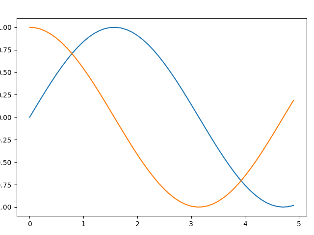
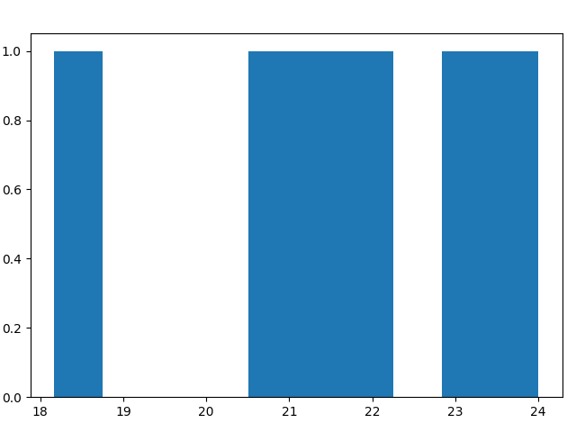
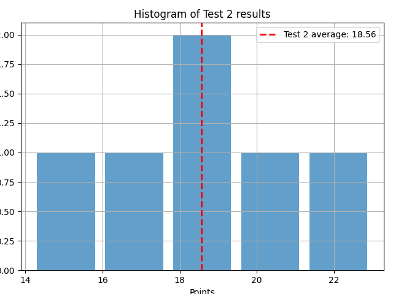

Table of Contents
1. Plotting practice: histograms
Plot challenge: make a histogram of the results for Test 1 and for Test 2. Draw the average of each test as a straight dashed line.
2. Make a histogram and customize it
- Open a new DataCamp workspace.
Define two lists
test_1andtest_2:test_1 = [18.17, 21, 21.5, 21.67, 23.17, 24] test_2 = [14.17, 17.67, 17.83, 19.17, 19.5, 23]
Import the library
matplotlib.pyplotasplt:import matplotlib.pyplot as plt
Look up the documentation for the
pyplotmodule.plt? # or ?plt
Enter and run the first example provided in the help.
import numpy as np x = np.arange(0,5,0.1) y_sin = np.sin(x) plt.clf() plt.plot(x,y_sin) # line plot y_cos = np.cos(x) plt.plot(x,y_cos) plt.savefig('../img/plt_demo1.png')

We're after something else: a frequency distribution of a single numeric variable (test points). We use the
plt.histmethod for that - without any bells and whistles at first:plt.clf() plt.hist(test_1) plt.savefig('../img/hist_test1.png')

Add some customization:
plt.hist()is the function that creates the histogram. The first argument is the data you want to plot.- The
binsargument is set to'auto'(determine number of bins based on the dataset). - The
alphaargument sets the transparency of the bars (1 is opaque, 0 is transparent). - The
rwidthargument sets the relative width of the bars as a fraction of the bin width.
plt.clf() plt.hist(test_1, bins='auto', alpha=0.7, rwidth=0.85) plt.savefig('../img/hist_test_11.png')
Add a title and axis labels:
plt.clf() plt.hist(test_1, bins='auto', alpha=0.7, rwidth=0.85) plt.xlabel('Points') plt.ylabel('Frequency') plt.title('Histogram of Test 1 results') plt.savefig('../img/hist_test_21.png')
Finally, put a grid behind the plot to ease readibility:
plt.clf() plt.hist(test_1, bins='auto', alpha=0.7, rwidth=0.85) plt.xlabel('Points') plt.ylabel('Frequency') plt.title('Histogram of Test 1 results') plt.grid(True) plt.savefig('../img/hist_test_31.png')
- All of these functions are methods of the
pyplotmodule.
3. Compute and draw a line for the point average
Import the NumPy package as
np.import numpy as np
Compute the average of the
test_1and thetest_2results asavg_1andavg_2and print them with two digits after the decimal point:avg_1 = np.mean(test_1) avg_2 = np.mean(test_2) print(f'Average Test 1: {avg_1:.2f}\nAverage Test 2: {avg_2:.2f}')
Average Test 1: 21.58 Average Test 2: 18.56
Since I already use NumPy, I can do this with an array in one go:
data = np.array([test_1, test_2]) print(data)
[[18.17 21. 21.5 21.67 23.17 24. ] [14.17 17.67 17.83 19.17 19.5 23. ]]
To compute the average along the rows, use the
axis=1parameter:avg = np.mean(data,axis=1) print(f'Average Test 1: {avg[0]:.2f}\nAverage Test 2: {avg[1]:.2f}')
>>> Average Test 1: 21.58 Average Test 2: 18.56
We can use
plt.avxlineto print the average as a dashed line into the histogram:plt.clf() plt.hist(test_1, bins='auto', alpha=0.7, rwidth=0.85) plt.axvline(avg[0], color='red', linestyle='dashed',linewidth=2) plt.xlabel('Points') plt.ylabel('Frequency') plt.title('Histogram of Test 1 results') plt.grid(True) plt.savefig('../img/hist_avg_11.png')
Finally, add a legend in the plot itself to identify the average:
plt.clf() plt.hist(test_1, bins='auto', alpha=0.7, rwidth=0.85) plt.axvline(avg[0], color='r', linestyle='dashed',linewidth=2, label=f'Test 1 average: {avg[0]:.2f}') plt.legend() plt.xlabel('Points') plt.ylabel('Frequency') plt.title('Histogram of Test 1 results') plt.grid(True) plt.savefig('../img/hist_avg_21.png')

Repeat this procedure for the second set of data points and create a similar histogram:
plt.clf() plt.hist(test_2, bins='auto', alpha=0.7, rwidth=0.85) plt.axvline(avg[1], color='r', linestyle='dashed',linewidth=2, label=f'Test 2 average: {avg[1]:.2f}') plt.legend() plt.xlabel('Points') plt.ylabel('Frequency') plt.title('Histogram of Test 2 results') plt.grid(True) plt.savefig('../img/hist_avg_31.png')

4. Subplots
We want to put the two histogram plots next to one another on two
panels. To do this, we need to use the plt.subplots method.
Create a figure and a set of two subplots (for each dataset):
plt.subplots(2)creates a new figurefigand returns a NumPy arrayaxscontaining the created subplot objects.figis the whole window or page that everything is drawn on.axsis an array of length 2 containing the axes for the subplots. In this case, since you're creating 2 subplots,axswill be an array of length 2. Each item in the array is a separate set of axes, which you can think of as an individual plot. You can draw on these axes (i.e., create a plot) by calling methods on them.
plt.clf() fig, axs = plt.subplots(2) plt.savefig('../img/subplot2.png')
When you run the code you should see two empty plot panels. You can experiment with these to find out more about
pltafter looking atplt.subplots?. If you remove thesubplotargument, you get one, not two plots.plt.clf() fig, axs = plt.subplots() plt.savefig('../img/subplot1.png')
To plot a histogram of your data on a subplot N of your figure, you call
axs[N].hist(). Do this now for N=0 only:plt.clf() # Create a figure and a set of subplots fig, axs = plt.subplots(2) # Create a histogram for test_1 axs[0].hist(test_1, bins='auto', color='b', alpha=0.7, edgecolor='black') axs[0].set_title('Histogram of test_1') plt.savefig('../img/sub_hist_11.png')
Now add the code for the second histogram below it, adapting the values accordingly:
import matplotlib.pyplot as plt import numpy as np # input data as lists test_1 = [18.17, 21, 21.5, 21.67, 23.17, 24] test_2 = [14.17, 17.67, 17.83, 19.17, 19.5, 23] plt.clf() # Create a figure and a set of subplots fig, axs = plt.subplots(2) # Create a histogram for test_1 axs[0].hist(test_1, bins=3, color='b', alpha=0.7, edgecolor='black') axs[0].set_title('Histogram of test_1') # Create a histogram for test_2 axs[1].hist(test_2, bins=3, color='r', alpha=0.7, edgecolor='black') axs[1].set_title('Histogram of test_2') # Display the (tight) plot plt.tight_layout() plt.savefig('../img/sub_hist_21.png')
- Here,
plt.tight_layout()automatically adjusts subplot parameters so that the subplot fits the panels nicely. Take it out and re-plot to see the effect. We've still got a problem: it is not easy to compare the two histograms because both x and y scales are different. To align the x and y scales of the two plots, you can use the
sharexandshareyparameters when creating the subplots:import matplotlib.pyplot as plt import numpy as np # input data as lists test_1 = [18.17, 21, 21.5, 21.67, 23.17, 24] test_2 = [14.17, 17.67, 17.83, 19.17, 19.5, 23] plt.clf() # Create a figure and a set of subplots fig, axs = plt.subplots(2, sharex=True, sharey=True) # Create a histogram for test_1 axs[0].hist(test_1, bins=3, color='b', alpha=0.7, edgecolor='black') axs[0].set_title('Histogram of test_1') # Create a histogram for test_2 axs[1].hist(test_2, bins=3, color='r', alpha=0.7, edgecolor='black') axs[1].set_title('Histogram of test_2') # Display the (tight) plot plt.tight_layout() plt.savefig('../img/sub_hist_31.png')